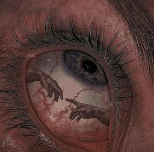

Min sida i kursen "JS"

Lite om mig
Mitt namn är Lucas Huynh. Född och uppvuxen i Västervik som ligger runt två timmar norr från Kalmar.
Jag började studera här på BTH under hösten 23 på programmet Software Engineering, men jag kände att programmet inte var för mig. Därför valde jag att byta till webbprogrammering.
Innan jag började plugga så jobbade jag i ungefär två på ett företag som heter SAAB Barracuda som ligger i Gamleby.
På fritiden brukar jag ofta spela datorspel men även piano till viss del.